Evaporative Emissions System: Testing and Inspection
Evaporative Emission Control System InspectionWhole system inspection
1. Disconnect the vacuum hose between the purge solenoid valve and the catch tank from the purge solenoid valve.
2. Insert hose on the vacuum pump.
3. Connect the NGS tester to the DLC-2.
4. Turn the ignition switch to ON.
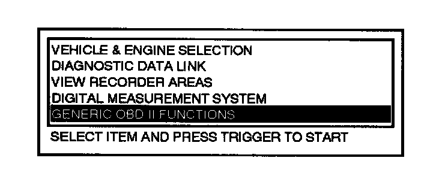
5. Select "GENERIC OBD II FUNCTIONS" and press the TRIGGER.
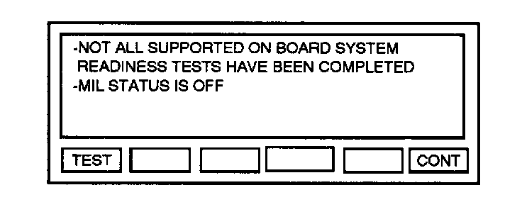
6. Press Number 8 under CONT to continue the GENERIC OBD II FUNCTIONS.
NOTE:
- The following conditions cancel the "ON BOARD DEVICE CONTROL" function:
1. Ten minutes after the "TRIGGER" on the NGS tester is depressed.
2. When engine is started.
3. If the pressure in the evaporative emission control system exceeds 6.43 kPa (48.26 mmHg, 1.9 inHg).
- Therefore, the following tests, step 7 through 15, should be conducted under the following conditions.
1. Within 10 minutes after TRIGGER on NGS tester is depressed.
2. Without starting the engine.
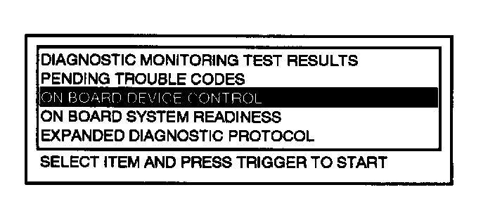
7. Turn the menu dial clockwise or counterclockwise to highlight the "ON BOARD DEVICE CONTROL" and press the TRIGGER.
8. Press CANCEL two times.
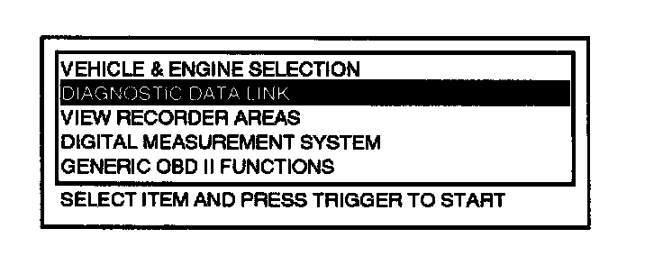
9. Select "DIAGNOSTIC DATA LINK" and press the TRIGGER.
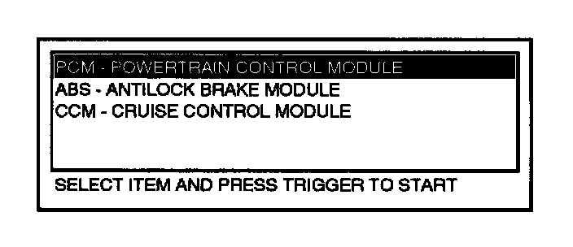
10. Select "PCM - POWERTRAIN CONTROL MODULE" and press the TRIGGER.
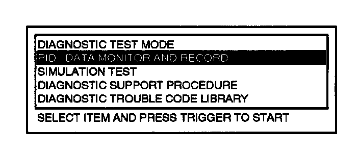
11. Select "PID/DATA MONITOR AND RECORD" and press the TRIGGER.
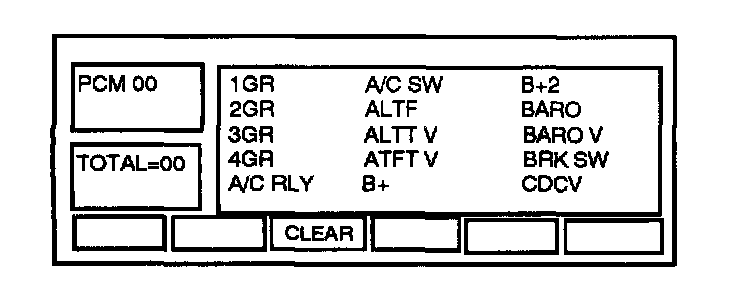
12. Press Number 5 under CLEAR to clear previously selected PIDs.
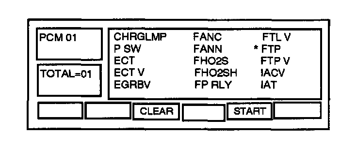
13. Turn the menu dial clockwise or counterclockwise to highlight FTP and press TRIGGER.
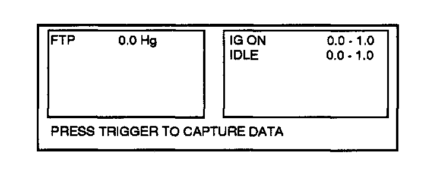
14. Press Number 7 under STRAT to view PIDs.
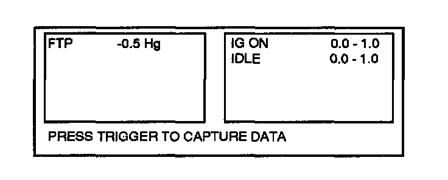
15. Apply vacuum to 1.7 kPa (13 mmHg, 0.5 inHg) and they should remain at the specified readings for a minimum of 2 minutes.
16. Return to the Diagnostic Trouble Code Inspection Procedures, and answer questions.
Inspection from charcoal canister to fuel tank
1. Inspect for loose and wrongly connected hoses between the charcoal canister and the fuel tank, refer to Evaporative Emission Control System Components Location.
2. Disconnect the vacuum hose between the charcoal canister and the tank pressure control valve from the charcoal canister.
3. Insert hose on the vacuum pump.
4. Connect the NGS tester to DLC-2.
5. Turn the ignition switch to ON.
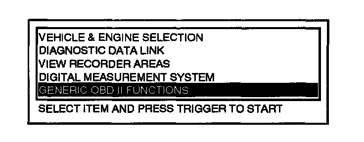
6. Select "GENERIC OBD II FUNCTIONS" and press the TRIGGER.
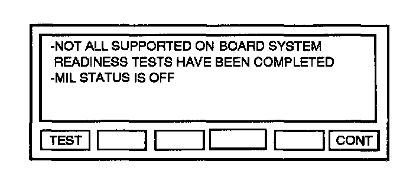
7. Press Number 8 under CONT to continue the GENERIC OBD II FUNCTIONS.
NOTE:
- The following conditions cancel the "ON BOARD DEVICE CONTROL" function:
1. Ten minutes after the TRIGGER on the NGS tester is depressed.
2. When engine is started.
3. If the pressure in the evaporative emission control system exceeds 6.43 kPa (48.26 mmHg, 1.9 inHg).
- Therefore, the following tests, steps B through 16, should be conducted under the following conditions.
1. Within 10 minutes after TRIGGER on NGS tester is depressed.
2. Ignition switch is ON, but is not started engine.
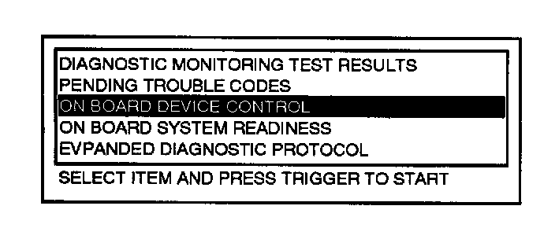
8. Turn the menu dial clockwise or counterclockwise to highlight the "ON BOARD DEVICE CONTROL" and press the TRIGGER.
9. Press CANCEL two times.
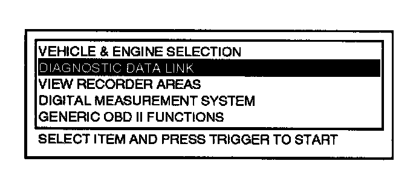
10. Select "DIAGNOSTIC DATA LINK" and press the TRIGGER.
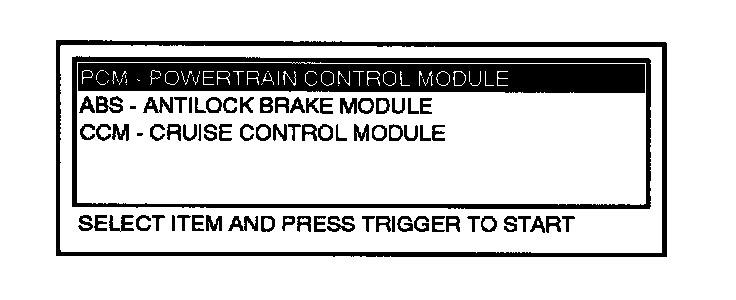
11. Select "PCM - POWERTRAIN CONTROL MODULE" and press the TRIGGER.
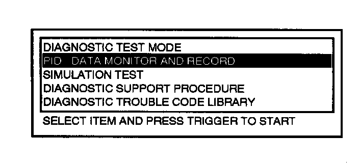
12. Select "PID/DATA MONITOR AND RECORD" and press the TRIGGER.
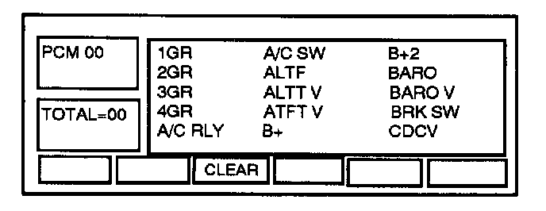
13. Press Number 5 under CLEAR to clear previously selected PIDs.
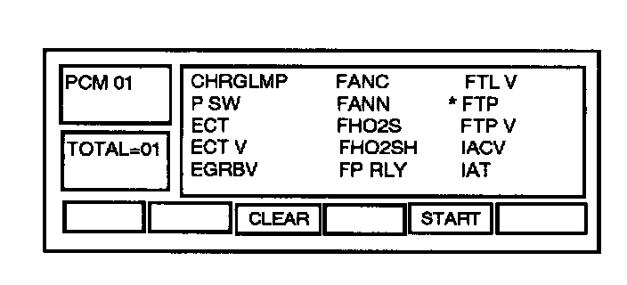
14. Turn the menu dial clockwise or counterclockwise to highlight the "FTP" and press TRIGGER.
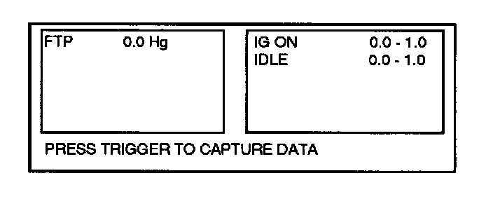
15. Press the Number 7 under STRAT to view PIDs.
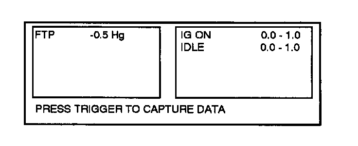
16. Apply vacuum to 1.7 kPa (13 mmHg, 0.5 inHg) and they should remain at the specified readings for a minimum of 2 minutes.
17. Return to the Diagnostic Trouble Code Inspection Procedures, and answer questions.
Inspection from charcoal canister to purge solenoid valve
1. Inspect for loose and wrongly connected hoses between the charcoal canister and the purge solenoid valve, refer to Evaporative Emission Control System Components Location.
2. Disconnect the vacuum hose between the charcoal canister and the catch tank from the charcoal canister.
3. Insert hose on the vacuum pump.
4. Apply vacuum to 3.3 kPa (25 mmHg, 1.0 inHg) and they should remain at the specified readings for a minimum of 2 minutes.
5. Return to the Diagnostic Trouble Code Inspection Procedures, and answer questions.